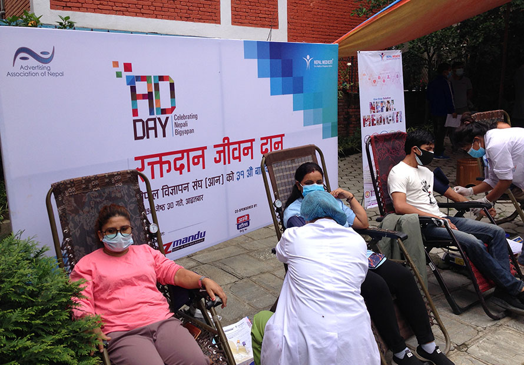
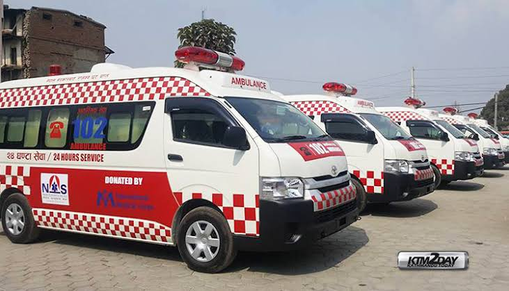
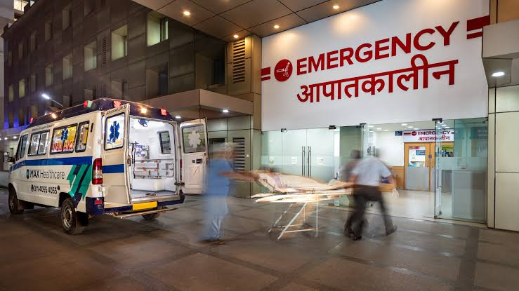

Blood support when every moment matters.
Blood bank services support patients who require blood or blood components during emergency care, surgery, medical treatment and other clinical situations.
Blood Availability
Availability can change throughout the day. Please contact the hospital before visiting for a specific blood group.

Rapid response when every second counts.
Ambulance services support emergency transportation and patient transfers when timely and safe movement to medical care is required.
Reliable testing for better medical decisions.
Laboratory services provide diagnostic information that can help healthcare professionals understand a patient's condition, support diagnosis and monitor treatment.

Immediate care. When you need it most.
Emergency care is intended for urgent medical situations where prompt assessment and appropriate medical attention are required.
Clearer answers through diagnostic care.
Diagnostic services help healthcare professionals investigate symptoms, understand medical conditions and support treatment decisions through appropriate investigations.
Dedicated care for heart health.
Cardiology services focus on cardiovascular health, evaluation of heart-related symptoms and appropriate medical follow-up for patients requiring heart health support.
Everyday healthcare, thoughtfully delivered.
General medicine provides support for common health concerns, medical consultations, health assessments, chronic condition management and continuing healthcare needs.